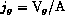
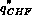
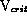
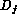
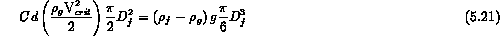
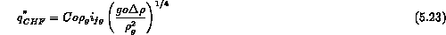
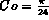
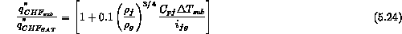
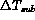

Critical heat flux (CHF) in pool boiling is an interesting phenomenon. As Figure 5.2 indicates, if one controls the input heat flux, there comes a point where as the heat flux is increased further the heater surface temperature undergoes a drastic increase. This increase originally was not well understood. Kutateladze (1951) offered the analogy that this large abrupt temperature increase was caused by a change in the surface geometry of the two phases. In fact, Kutateladze first empirically correlated this phenomenon as analogous to a gas blowing up through a heated porous plate cooled by water above it. At a certain gas volumetric flowrate (or superficial velocity,  ) the liquid ceases to contact the heated surface and the gas forms a continuous barrier. Kutateladze concluded this by measuring the increasing electrical resistance between the plate and water as a function of the increase gas flowrate. Thus, pool boiling CHF may be thought of as the point where nucleate boiling goes through a flow regime transition to film boiling with a continuous vapor film separating the heater and the liquid. More generally, one may say CHF is the condition where the vapor generated by nucleate boiling becomes so large that it prevents the liquid from reaching and rewetting the surface.
Consider this final physical picture of the critical heat flux,  , where the liquid is prevented from reaching the heater surface by the flow of vapor generated by boiling,
where  is that critical superficial velocity preventing the liquid flow. A simple force balance on the liquid as droplets,  , is given by

where is assumed to determined by the characteristic Taylor wavelength (Equ 5.11), which results in a velocity of
Combining these relations one obtains a general expression for CHF in pool boiling

where the constant, Co, is found to be in the range of 0.12 to 0.18; e.g., Zuber (1958) theoretically estimated  , Kutateladze (1951) correlated data for Co = 0.13, and Lienhard (1976) correlated data for Co = 0.15.
All of these previous discussions focused on the case where the liquid pool was at its saturation temperature. If the stagnant pool is maintained at a temperature below saturation, subcooled, the vapor bubbles can condense before they get very far from the heater surface. Thus, the heater power can go into directly heating the liquid and actual vapor superficial velocity is decreased; thus increasing the allowable heat flux before CHF occurs. Ivey and Morris (1962) correlated this subcooling effect as a multiplicative correlation to ,

where  is the degree of subcooling in the liquid.
The final point to emphasize is the location of the CHF point on the pool boiling curve of Figure 5.5. Critical heat flux appears as a horizontal line of the pool boiling curve and its intersection with the nucleate boiling curve indicates the temperature at which CHF occurs.